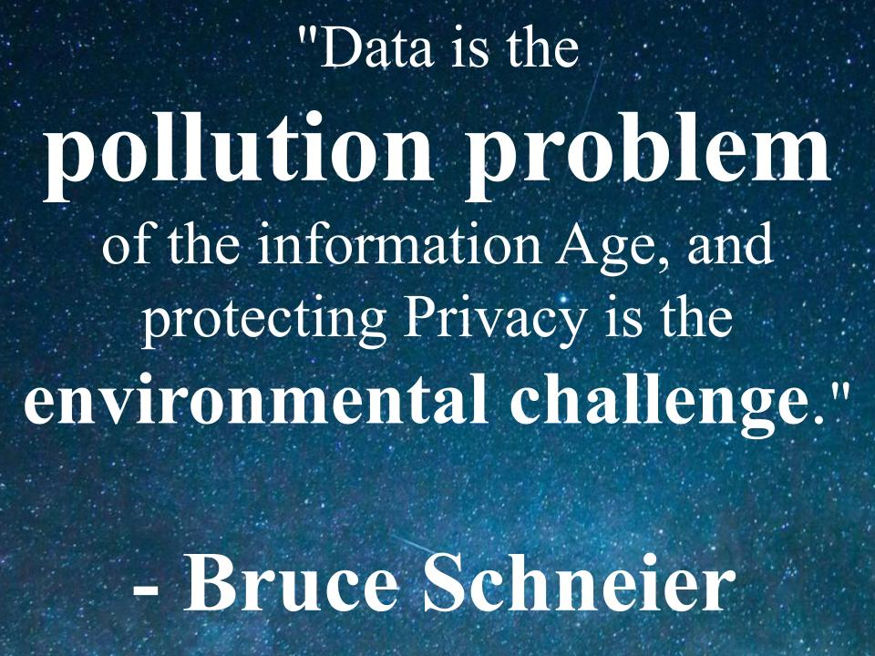

Jacob Noah Glik
Welcome to my spacious website!
Writen in:
- HTML5
- CSS
- Javascript
I love learning new skills and making programs come to life!
I got bored this winter...
So I opened my favorate python IDE (PyCharm by JetBrains) and just started typing my bordem away. Two weeks later I had a cute in-terminal Tetris game to show for it!
I ran into many issues along the way. I had to learn how to run multiple threads who share an object so that the thread listening to the keybord can report back to the thread displaying the game. In order to avoid memory curruption I had to be creative and think of how my many threads comunicate information to eachother. Each keybord listener thread would copy the gamebord to edit the copy and not the real one to avoid memory problems. The main thread would then wake up and make the sufficient changes to be 'up-to-date' before continuing the game.
There were many bugs along the way. The game is not perfect by any means, but that's the beauty of it: it dosn't have to be. I was playing around with python. It wasn't for a grade, or for one of my employers. It was for me to play around and learn more about this fascinating language. The only real diffrence between a professional programmer and a nocie is how much time and effort they spend working on their programs.
View the online version (replit.com)View the project github
👩🏽🚀 How did it start?
One day in eighth grade Math, we were tasked to create an interactive desmos graph. We had two weeks, but I had finished in about half an hour. I created a power function which would change based on a variable set by the user.
😴 BORINNNNGGGG 😴
One day, about a week from the deadline, I got curious if I could build a game in desmos. When I told my bestfirend of my plans he said it would be impossible. That's the moment I knew I had to do it. That was the first week I can remember where I had spent less time playing videogames then doing school-work! I was done just hours before the deadline and couldn't be prouder of my accomplishments. "Math really is the language for me" I thought. Little did I know of how much I'd fall in love with programming just years later.
See it for yourself

🛡️ Cybersecurity project 🎩
For Intro to Cybersecurity last semester, my partner and I created a program that could securely send files and other data from one client to another. At the end of the semester we presented our project to the class and were chosen to be the standard in future classes. Our project is now an example to other students because we used everything we learnt throught the semester to secure our project.
We used multiple cryptography schemes including:
✔️ ECDH key handshake to publicly transmit symmetric keys
✔️ Timmed-Based Elliptical Curves to generate public/private keys
✔️ Key-Blacklist to make sure each communication is encrypted with a different key to provide forward secrecy
✔️ Certificate Authority for authentication and non-repudiation
✔️ Packet CRCs providing both integrity and corruption protection
✔️ Login-timelocks to stop a timming attack
✔️ AFK-timeouts to stop an in-person negligence breach
✔️ Constant file-hashing and file-timestamp-comparison to make file-tampering impossible
✔️ Pickled-Pepperd-Salted-Hashed password encryption-checking so that saving any remnence of the password is unnessisary.
See the project in an online compiler (replit.com)
See the github for this project
👷 Work History
Snap Cast ML, Newton, MA
- Softrgb(162, 240, 233)233) Intern -
● Extracted wiki page summaries from URIs for machine learning with the use of regular expression
● Completed coding and algorithms to process text through APIs like yonderlabs’s sentiment analysis, AWS.Recognition’s image categorization, and rapidAPI’s dictionary search
○ Minimized processing time utilizing multithreading
○ Automated extracting summaries from text attributes
○ Ascertained word relevance in a sentence
● Documented classes and methods using annotation style JavaDoc
● Created text processing algorithms that identify number values and understand relevance
● Created website with testing tools documentation for sales
● Performed website updates and domain name registrations
● Built the following websites using dreamhost, remixer, and html5-css:
https://www.getmyapptested.com
https://checkmygigs.com
https://getmyteethchecked.com
Russian School of Mathematics, Newton, MA
- Data Analyst and Tech Support -
● Proofread mathematical problem sets and solutions
● Conducted data aggregation and compression to transfer excel documents to google sheets
● Provide tech support during online classes
● Troubleshoot access, sound, and video
With utmost respect for those who helped me:
🙏 Thank you Jeff Delaney for an detailed and easy to follow guide to building a 3D interactive website!
🙏 Thank you hdqwalls.com for supplying the gorgeous high-definition space image I used as a background for free.
🙏 Thank you schneier.com for supplying the high quality Bruce Schneier photograph taken by Claudia Miklas, which they let me use for free.
🙏 Thank you to my parrents who pushed me into programming and showed me how math can be beautiful with just a little creativity!
🙏 Thank you to my teachers who have supported me and helped me throught my journey.
{kind=link}